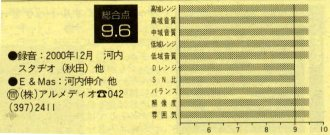

2000.12.01–03 河内スタヂオ録音
My Song Book
角の りょう角の りょう (vo) / 宮之上貴昭 (g) / 宇多慶記 (p, key) / 稲垣護 (b) / 高橋信之介 (ds)
About the Album
作品紹介
「MY SONG BOOK」
すみ
角の りょう
角の りょう(vo)
宮之上貴昭(g)
宇多慶記(p,key)
稲垣護(b)
高橋信之介(dr)
2000年12月1～3日
河内スタヂオ録音 ￥３，０００
（CD代、税込み）
SOLD OUT
1.♪Lullaby Of Birdland （338ｋｂ） 2.Recado Bossa Nova 3.Come Rain Come Shine 4.Someone To Watch
5.You’d Be So Nice To Come Home To 6.Fly Me To The Moon 7.Antonio’s Song 8.New York State Of Mine 9.Satin Doll
10.Misty 11.Sentimental Journey 12.The Days Of Wine And Roses 13.Tenessee Walz
Dear Listener
こんにちは、本CDを聴いてくださってありがとうございます。記念すべき私のファーストアルバムは、より沢山の皆様に聴いていただけるよう、特にスタンダード曲にこだわって選曲してみました。どの曲も大好きな曲ばかりです。
この13曲の中の1曲でも「私の歌うあの曲を聴きたいなぁ！」と、このCDをプレーヤーに入れてくだされば、こんな嬉しいことはありません。
ライブなどでお会いした時、どうぞ感想をお聞かせ下さい。
本CD制作に協力してくださったミュージシャンの方々、スタッフの方々、本当にありがとうございました。
「１枚のＣＤというのは、皆さんのまさに、力の結晶なんだなぁ」とつくづく実感しました。
感謝の気持ちで一杯です。
2001年3月18日 角の りょう

*stereo 6月号
で今月の優秀録音9.6点、2001年上半期優秀録音ベスト10に選ばれました。
オーソドックスなジャズのヴォーカル・アルバムで、秋田の河内スタヂオでの録音。レーベル名は“アルメディオ”。ゆったりとレンジを拡げたアコスティックに溢れた収録音パターンは、素直でいっさいの加工臭を感じさせないプレーンなサウンドで心に浸み込む。肉声的なヴォーカルと、美しいピアノ、スムーズなベース、ドラムスと、好録音 （ステレオ６月号）